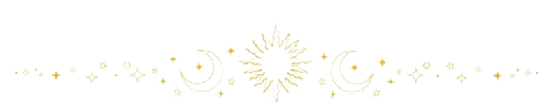
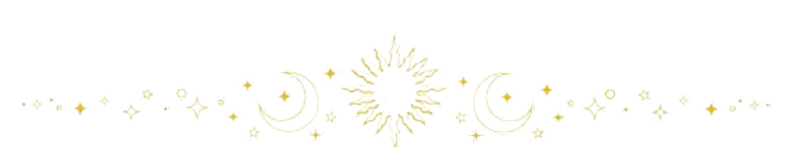

En aquest espai trobaràs les grans respostes a les teves grans preguntes, ja sigui sobre el teu futur, les teves relacions o de qualsevol cosa que t’agradaria saber.
I com a dada curiosa, la baralla de tarot més antiga que es coneix té el seu origen a la Itàlia del segle XIV, on un noble italià va fer pintar a mà una baralla com a regal per a les noces de les seves filles. Les cartes representen els principals aspectes de la vida i mostren el que podem aprendre de nosaltres mateixos.
 
